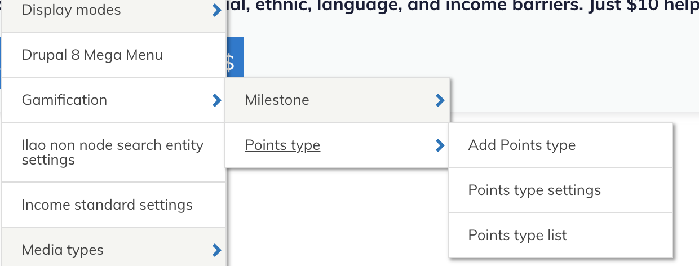

Legal Content Volunteers Program
The legal content volunteer program is an official volunteer opportunity at ILAO. While all legal aid and pro bono members can contribute edits to content, a legal content volunteer (LCV) is part of an active recognized volunteer program whose people have been onboarded, trained, and are taking assignments.
Contents
Gamification components are managed under Structure/Gamification
